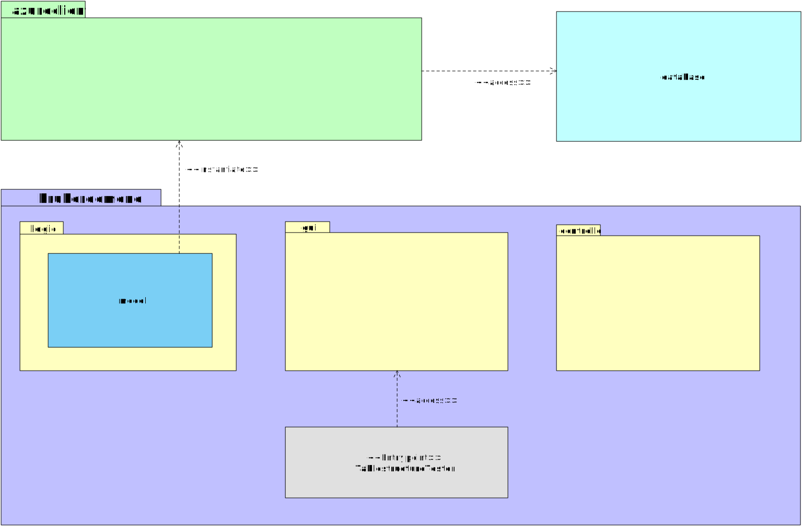
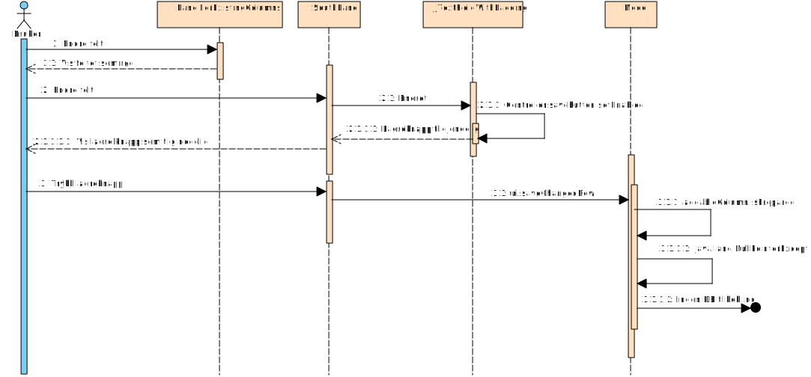

Gruppeeksamen i objektorientert analyse og design ved Høgskolen i Buskerud og Vestfold vinteren 2015 gikk ut på å analysere et Java-program ved hjelp av diagrammodelleringsverktøy
Programmet er et forholdsvis enkelt program for å vise værdata fra lokasjoner. Programmet lar brukeren søke opp datafelt i en dokumentdatabase, endre innhold i disse, samt legge til og fjerne felt fra databasen. Vi har trukket ut aspekter av programmet som vi har vurdert som interessante å belyse i form av UML. Navigering i dette dokumentet gjøres ved å scrolle seg nedover siden, eller ved å benytte snarveiene i menyen. Ved å klikke på bildene, vil disse åpne seg i full størrelse i nye faner.
Utvikleren har ikke fulgt MVC-konvensjonene fullt ut, og har lagd en hybridløsning - noe som medførere svakere kohesjon i systemet
Analyse av strukturen i programkoden avslører at utvikleren har hatt tanker om å skille datagrunnlag, grensesnitt og programlogikk, noe som er et godt utgangspunkt. Imidlertid er ikke tankerekken fullført, og det viser seg at datagrunnlaget - heretter kalt model, ligger i en pakke som også innehar klasser for programlogikk. Model instansierer et azureclient-objekt som igjen tar seg av databaseaksess, og så danner datagrunnlaget for systemet.
Følgende klassediagram illustrerer problemet:
Model bør skilles ut i en separat pakke fremfor å inkluderes i en pakke hvor det også befinner seg programlogikk. Disse logikklassene burde forøvrig vært flyttet til controller-pakken. Dette ville bidratt til at koden hadde fått høyere grad av kohesjon (Holmstedt, 2004, s. 269).
Funksjonaliteten for å endre data og struktur i dokumentdatabasen følger ikke prinsipper om usability
Bruk av programmet viser problemer i programflyten når det gjelder hvordan det håndterer bruker-input i tilfellet hvor brukeren ønsker å endre data. Det tas utgangspunkt i at bruker først har søkt opp data som skal endres. Når bruker trykker "Lagre endringer", skjer det ingen ting. Debug-vinduet i IDE-et avslører en programfeil, men brukeren av programmet får ingen tilbakemelding om dette, og programmet gjør ingen endringer. Dette bryter med principle of least astonishment, som vektlegger at grensesnittkontroller og programflyt bør oppføre seg slik brukere flest forventer (Seebach, 2001).
Sekvensdiagrammet under illustrerer problemet:
Grunnen til dette, er at koblingen mot databasen ikke inntreffer der det er hensiktsmessig i denne sammenheng.